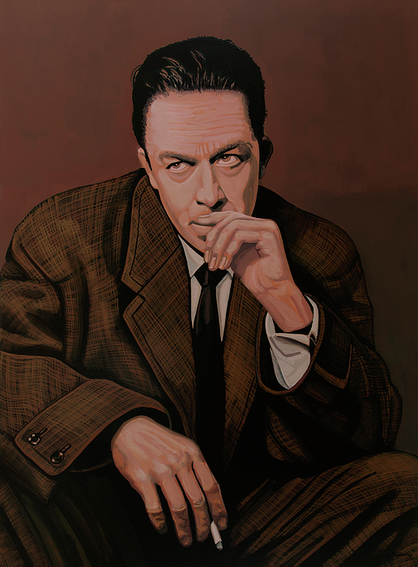

უცხო
ინფორმაცია წიგნზე
ავტორი: ალბერთ კამიუ
ჟანრი: აბსურდიზმი,ფილოსოფიური,ეგზისტენციალური
გამოშვების თარიღი: 1942 წელი
აღწერა:
1942 წელს გამოქვეყნებული ფრანგი ავტორის ალბერ კამიუს მიერ, „უცხო“ დიდი ხანია ითვლებოდა მეოცე საუკუნის ლიტერატურის კლასიკად. Le Monde-ი მას "საუკუნის 100 წიგნის" სიაში პირველ ადგილს იკავებს. ჩვეულებრივი კაცის ამ ამბის მეშვეობით, რომელიც უნებლიედ ჩაითრევს უაზრო მკვლელობას ალჟირის ჩაძირულ სანაპიროზე, კამიუ იკვლევს იმას, რასაც მან უწოდა "ადამიანის სიშიშვლე, რომელიც აბსურდის წინაშე დგას".
ალბერ კამიუ (დაიბადა 1913 წლის 7 ნოემბერი, მონდოვი, ალჟირი - გ. 4 იანვარი, 1960, სენსთან, საფრანგეთი) იყო ფრანგი რომანისტი, ესეისტი და დრამატურგი, რომელიც ყველაზე ცნობილია ისეთი რომანებით, როგორიცაა L'Étranger (1942; უცხო), La Peste (1947; ჭირი) და La Chute (1956; დაცემა) და მისი მუშაობისთვის მემარცხენე საქმეებში. მან მიიღო 1957 წლის ნობელის პრემია ლიტერატურაში.
ავტორის ხელმოწერა: